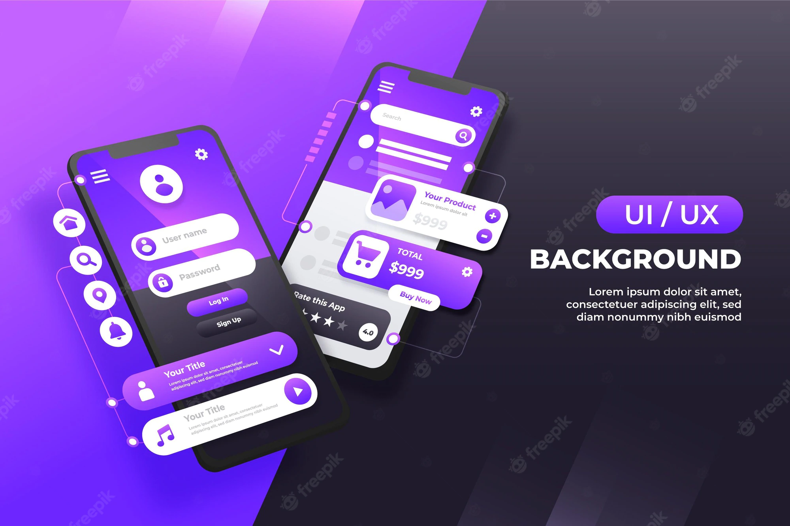
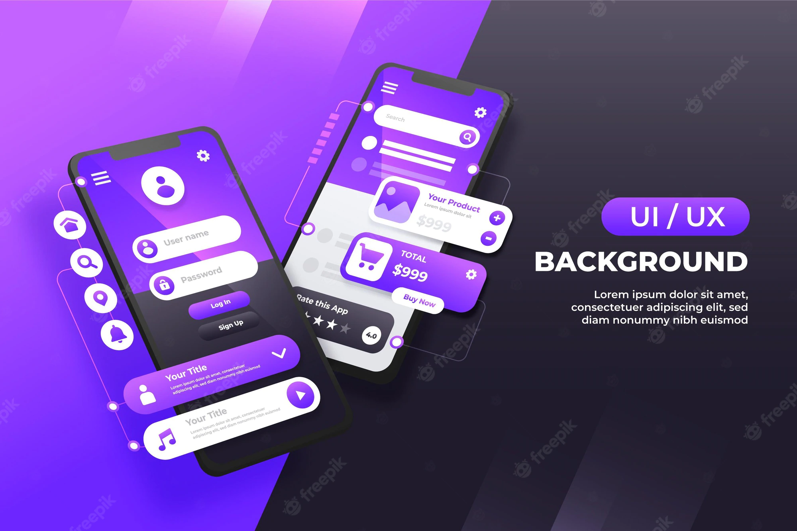

Där tar de med oss på en resa hur internet kom att bli en nyhet världen aldrig kommer glömma. Samt tar de även upp idéer/ för-, och nackdelar med dagens User Interface och User Experience
09:00 - 11:00
Robin Hansson - Webbens historia, kriget för en fungerande browser
11:00 - 12:00
Kim J Adolfsson- World Wide Webb (w3c) - Regler vi behöver använda oss av och varför
12:00 - 13:00
Lunch - Serveras i kaffeterian för er som förbeställt
13:00 - 15:00
Berit Johanesson - Vad är User interface/User experience? Vart kommer användarvänligheten in i bilden.

Där föreläser de om hur de kom på idén till versionshantering verktyget och hur det tog världen med storm. Senare på eftermiddagen kommer Web Accessibility Specialisten Anna Bergholtz, där hon föreläser om A11Y. Internet för alla. Utöver det ska vi kika in på programmeringsspårk som Javascript/ C++/C#
09:00 - 10:00
Anna Bergholtz - A11y (accessibility) Vad vi behöver tänka på.
10:00 - 12:00
Tom Preston-Werner & Scott Chacon - Grundarna av Github/Git
12:00 - 13:00
Lunch - Serveras i kaffeterian för er som förbeställt
13:00 - 14:00
Bengt Andersson- Javascript
14:00 - 15:00
Magnus Johanesson - C++ .
15:00 - 16:00
Elin Björk - C# hur ska man tänka


Där tar de med oss på en resa från stationära Microsoft servers till det mer abstrakta molnet kom att bli en nyhet världen aldrig kommer glömma, vart idén kom ifrån och hur vi tillsammans har utvecklat den till vart vi är idag. De tar även upp idéer/ för-, och nackdelar med dagens User Interface och User Experience
09:00 - 12:00
Eva Josefsson - Backend, programmeringsspårk, vad det används till
12:00 - 13:00
Lunch - Serveras i kaffeterian för er som förbeställt
13:00 - 16:00
Magnus Perkele - Fullstack varför vi behövs